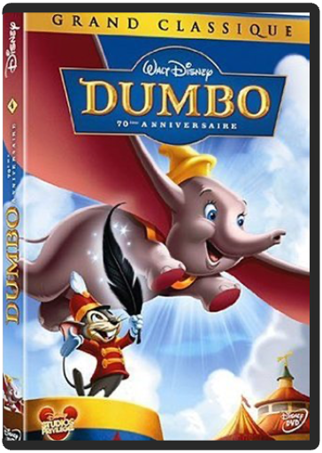
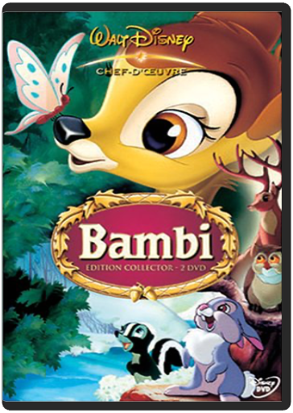

Pinocchio (Edition 70ème anniversaire)  walt disney, 4 : dumbo, édition 70ème anniversaireBen Sharpsteen L'histoire poignante d'un éléphanteau né avec des oreilles trop grandes pour lui. Mis à l'écart et tourné en ridicule par les autres pensionnaires du cirque, il finit par se lier d'amitié avec Timothée, une souris au tempérament jovial. A force de persévérance et de courage Dumbo parvient un jour à s'envoler et devient la grande vedette du cirque?  walt disney, 5 : bambi - édition collectorwalt disney Qu’il est bon de se replonger avec nostalgie dans Bambi, au travers de cette réédition numérique qui concrétise quelques années de travail sur la plus grosse entreprise de restauration orchestrée par les studios Disney. Un travail justifié tant Bambi représente, avec Blanche-Neige et les 7 nains, la quintessence de l’imagination et le génie de l’animation de l’oncle Walt. Parcours initiatique universel, le film renvoie l’enfant à ses propres expériences et sa découverte du monde. Il reste aussi l’un des films les plus traumatisants pour nos chers bambins, sans doute car c’est l’une des rares fois où le «méchant» n’est pas explicitement montré. Le mal est invisible et, le pire de tout, humain… et adulte. Avec autant de moments mémorables, de scènes d’anthologie, Bambi prépare l’enfant au monde difficile qu’il va devoir affronter. La démarche n’est pas nouvelle, mais tout simplement essentielle.  Cendrillon fait partie de ces classiques Disney intemporels et au charme toujours intact. Avec Blanche-Neige et La Belle au bois dormant, ce film fait partie du trio romanesque magique du premier âge d’or de Walt Disney, porté par l’atout maître des studios Disney : un savoir-faire incomparable pour la création des personnages secondaires. Pantoufle de vair, citrouille, fées, souris, autant d’images inoubliables qui participent à ce pur enchantement. |

Julien
Collection Total:
2 025 Items
2 025 Items
Last Updated:
Dec 25, 2023
Dec 25, 2023


 Made with Delicious Library
Made with Delicious Library